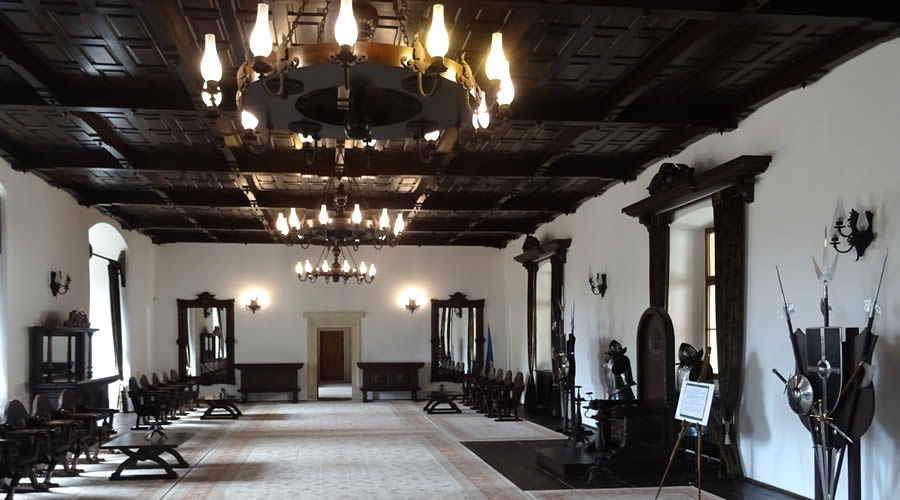

Muzeul Ţării Făgăraşului "Valer Literat" este muzeul unei întinse zone istorice şi etnografice, al unei bogăţii
de documente şi mărturii despre locuitorii Ţării Făgăraşului.A fost înfiinţat în anul 1923 pe baza colecţiei etnografice
a profesorului Valeriu Literat (1885-1972), reprezentant de frunte al vieţii culturale din oraşul Făgăraş, din perioada
interbelică. La început muzeul din Făgăraş a funcţionat sub egida "ASTREI" şi în custodia colecţionarului, până în 1951,
când i-a fost atribuit un sediu stabil şi a primit statutul de istitutie de stat.În anul 1973 muzeul orăşenesc a fuzionat
cu secţia muzeală, ce fusese înfiinţată, încă din 1968, în Cetatea Făgăraşului şi afiliata, o vreme, Muzeului Brukenthal
din Sibiu.Până în anul 1981 s-a numit Muzeul "Cetate Făgăraş", şi de la această dată şi până în 2004 s-a numit "Muzeul
Ţării Făgăraşului", iar din 2004 până în prezent poartă denumirea de Muzeul Ţării Făgăraşului "Valer Literat". Prestigioasa
instituţie de cultură făgărăşeana, Muzeul Ţării Făgăraşului "Valer Literat" s-a îmbogăţit în timp cu obiecte valoroase.
Muzeul desfăşoară o continua activitate de cercetare istorică şi etnografica a zonei, de îmbogăţire, conservare şi
valorificare ştiinţifică a patrimoniului colectat de pe teritoriul Ţării Făgăraşului.De profil mixt (istorie, etnografie
şi artă), Muzeul Ţării Făgăraşului "Valer Literat" cuprinde în patrimoniul sau o mare varietate de colecţii, precum cele
de: arheologie, arme, numismatica, cahle, carte românească, documente, lapidarium, glajarie, arta decorativă şi plastică,
ceramică populară, port popular, ţesături, obiceiuri, icoane pe sticlă, ouă încondeiate, arta lemnului, lemn-os-fier,
meşteşuguri, s.a.Expoziţia de bază reprezintă evoluţia civilizaţiei Ţării Făgăraşului într-o însuşire de documente şi
evenimente semnificative.În funcţie de conţinutul patrimoniului sau, expoziţia de bază a muzeului a fost structurata
pe trei secţiuni:
- Istoria Ţării Făgăraşului: arheologie, epoca medievală, epoca modernă şi arme (în Turnul Donjon);
- Etnografia Ţării Oltului: ceramică, ţesături, port popular, interior ţărănesc, icoane, etc.
- Galeria de sculptură Virgil Fulicea (1907-1979), aflată în Sala Dietei.Dimensiunile şi importanta colecţiilor pe care le
deţine muzeul, presupun extinderea acestuia în viitor.
Sala de istorie medie
Ţara Faragarasului, unul din cele mai întinse şi bogate domenii feudale ale Transilvaniei, s-a aflat între 1368-1464, în posesia domnilor Ţării Româneşti, că feud acordat de regii maghiari.După succedarea mai multor stăpâni, intra în posesia principilor Transilvaniei până în 1696, când va trece în proprietatea coroanei habsburgice.Expoziţia de istorie medievală a Ţării Făgăraşului încearcă să ilustreze principalele evenimente ale perioadei şi cele mai reprezentative monumente din zonă: cetatea de la Breaza, bisericile fortificate săseşti, mănăstirea cisteriana de la Carta şi ctitoriile brâncoveneşti.
Sala de istorie modernă
Sala de istorie modernă a Muzeului Ţării Făgăraşului "Valer Literat" surprinde cele mai importante momente ale istoriei României, cu aplicare zonală (Revoluţia de la 1848 / 49, Independenta României - 1877 / 78, Primul Război Mondial - 1916 / 18, Marea Unire - 1 dec. 1918), dar şi aspecte legate de cultură, şcoală şi luptă pentru unitate naţională a românilor făgărăşeni.Un segment important îl constituie istoria breslelor locale, majoritatea româneşti, cu o evoluţie îndelungată (1597-1872), dar şi cu repercusiuni deosebite asupra aspectelor economice, sociale, politice, culturale şi religioase ale acestui ţinut distinct - Tara Făgăraşului.
Sala de ceramică
Sala de ceramică prezintă meşteşugul şi arta ceramică din centrul şi sud-estul Transilvaniei, ale cărei produse au circulat în zona Ţării Făgăraşului. Sunt piese realizate în centre săseşti (Sibiu, Drauseni, Nemsa, Carta, etc.), maghiare şi secuieşti (Ocna Sibiului, Turda, etc.) şi româneşti (Noul Roman, Făgăraş). Sala de port. Interior ţărănesc
Cea de-a doua sală de etnografie cuprinde în afară textilelor şi a portului săsesc, maghiar şi românesc din zonă şi un interior ţărănesc din satul Drăguş a cărei caracteristică principală este armonia dintre volum (dat de mobilier) şi culoare (data de textile).
Sala de artă religioasă
Sala de artă religioasă (ţărănească şi cultă) prezintă valoroase icoane pe sticlă, în special din centrele făgărăşene, picturi pe pânză, uşile împărăteşti ale Altarului Evanghelic din Cincsor, cărţi, cruci de mână, etc.
Sala de arme
În sala de arme a muzeului sunt expuse piese cât mai reprezentative pentru a ilustra evoluţia echipamentului militar între secolele XIII-XIX, grupate pe 2 categorii: arme albe (ofensive şi defensive) şi arme de foc
Galeria de sculptură "Virgil Fulicea"
Galeria de sculptură "Virgil Fulicea", pune în evidenţă cele mai importante lucrări ale donaţiei făcută de către acest deosebit artist plastic contemporan făgărăşean. Indiferent de materialul folosit - gips, gips patinat, bronz, alabastru, s.a., toate aceste piese denotă măiestria artistului, munca elaborată şi stilul personal care l-au caracterizat de-a lungul întregii cariere.